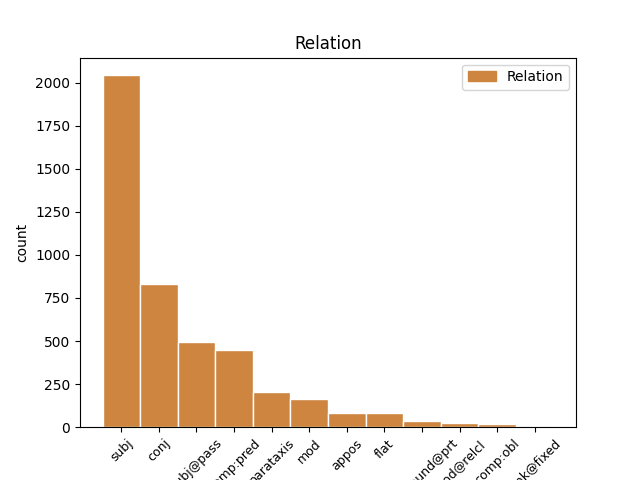
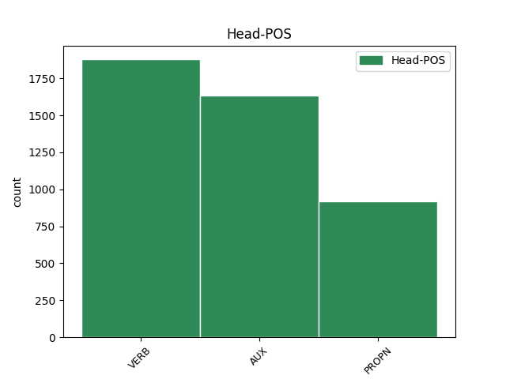
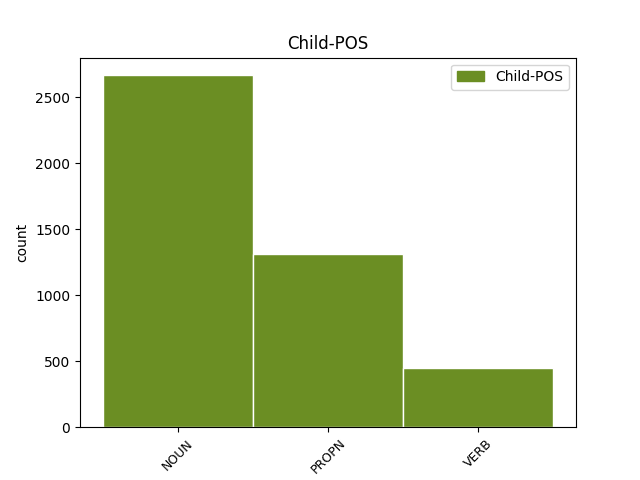

Distribution of features within this leaf



Agreement Rules sorted by frequency.
- When the dependent token is the subject(subj) of the head token, and the head token is VERB and the dependent token is NOUN.
1 De _ _ _ _ 0 _ _ _
2 eerste _ _ _ _ 0 _ _ _
3 verhalen _ _ _ _ 0 _ _ _
4 werden _ _ _ _ 0 _ _ _
5 gepubliceerd _ _ _ _ 0 _ _ _
6 in _ _ _ _ 0 _ _ _
7 wat _ _ _ _ 0 _ _ _
8 de _ _ _ _ 0 _ _ _
9 Rode _ _ _ _ 0 _ _ _
10 reeks _ _ _ _ 0 _ _ _
11 wordt _ _ _ _ 0 _ _ _
12 genoemd _ _ _ _ 0 _ _ _
13 ( _ _ _ _ 0 _ _ _
14 zo _ _ _ _ 0 _ _ _
15 genoemd _ _ _ _ 0 _ _ _
16 omdat _ _ _ _ 0 _ _ _
17 de _ _ _ _ 0 _ _ _
18 albums album NOUN N|soort|mv|basis Number=Plur 22 subj _ _
19 een _ _ _ _ 0 _ _ _
20 helrode _ _ _ _ 0 _ _ _
21 omslag _ _ _ _ 0 _ _ _
22 hadden hebben VERB WW|pv|verl|mv Number=Plur|Tense=Past|VerbForm=Fin 0 _ _ _
23 , _ _ _ _ 0 _ _ _
24 die _ _ _ _ 0 _ _ _
25 de _ _ _ _ 0 _ _ _
26 reeks _ _ _ _ 0 _ _ _
27 zeer _ _ _ _ 0 _ _ _
28 herkenbaar _ _ _ _ 0 _ _ _
29 maakte _ _ _ _ 0 _ _ _
30 ) _ _ _ _ 0 _ _ _
31 . _ _ _ _ 0 _ _ _
1 Hij _ _ _ _ 0 _ _ _
2 is _ _ _ _ 0 _ _ _
3 een _ _ _ _ 0 _ _ _
4 persoon _ _ _ _ 0 _ _ _
5 zonder _ _ _ _ 0 _ _ _
6 geweten _ _ _ _ 0 _ _ _
7 en _ _ _ _ 0 _ _ _
8 probeert _ _ _ _ 0 _ _ _
9 Suske Suske PROPN N|eigen|ev|basis|zijd|stan Gender=Com|Number=Sing 0 _ _ _
10 en _ _ _ _ 0 _ _ _
11 Wiske Wiske PROPN N|eigen|ev|basis|zijd|stan Gender=Com|Number=Sing 9 conj _ _
12 vaak _ _ _ _ 0 _ _ _
13 dwars _ _ _ _ 0 _ _ _
14 te _ _ _ _ 0 _ _ _
15 zitten _ _ _ _ 0 _ _ _
16 . _ _ _ _ 0 _ _ _
1 Op _ _ _ _ 0 _ _ _
2 zondag _ _ _ _ 0 _ _ _
3 24 _ _ _ _ 0 _ _ _
4 juli _ _ _ _ 0 _ _ _
5 2005 _ _ _ _ 0 _ _ _
6 werd _ _ _ _ 0 _ _ _
7 de _ _ _ _ 0 _ _ _
8 60ste _ _ _ _ 0 _ _ _
9 verjaardag _ _ _ _ 0 _ _ _
10 van _ _ _ _ 0 _ _ _
11 de _ _ _ _ 0 _ _ _
12 serie _ _ _ _ 0 _ _ _
13 gevierd _ _ _ _ 0 _ _ _
14 in _ _ _ _ 0 _ _ _
15 Bokrijk _ _ _ _ 0 _ _ _
16 , _ _ _ _ 0 _ _ _
17 waar _ _ _ _ 0 _ _ _
18 alle _ _ _ _ 0 _ _ _
19 personages personage NOUN N|soort|mv|basis Number=Plur 21 subj _ _
20 present _ _ _ _ 0 _ _ _
21 waren zijn AUX WW|pv|verl|mv Number=Plur|Tense=Past|VerbForm=Fin 0 _ _ _
22 . _ _ _ _ 0 _ _ _
1 De _ _ _ _ 0 _ _ _
2 eerste _ _ _ _ 0 _ _ _
3 verhalen verhaal NOUN N|soort|mv|basis Number=Plur 4 subj@pass _ _
4 werden worden AUX WW|pv|verl|mv Number=Plur|Tense=Past|VerbForm=Fin 0 _ _ _
5 gepubliceerd _ _ _ _ 0 _ _ _
6 in _ _ _ _ 0 _ _ _
7 wat _ _ _ _ 0 _ _ _
8 de _ _ _ _ 0 _ _ _
9 Rode _ _ _ _ 0 _ _ _
10 reeks _ _ _ _ 0 _ _ _
11 wordt _ _ _ _ 0 _ _ _
12 genoemd _ _ _ _ 0 _ _ _
13 ( _ _ _ _ 0 _ _ _
14 zo _ _ _ _ 0 _ _ _
15 genoemd _ _ _ _ 0 _ _ _
16 omdat _ _ _ _ 0 _ _ _
17 de _ _ _ _ 0 _ _ _
18 albums _ _ _ _ 0 _ _ _
19 een _ _ _ _ 0 _ _ _
20 helrode _ _ _ _ 0 _ _ _
21 omslag _ _ _ _ 0 _ _ _
22 hadden _ _ _ _ 0 _ _ _
23 , _ _ _ _ 0 _ _ _
24 die _ _ _ _ 0 _ _ _
25 de _ _ _ _ 0 _ _ _
26 reeks _ _ _ _ 0 _ _ _
27 zeer _ _ _ _ 0 _ _ _
28 herkenbaar _ _ _ _ 0 _ _ _
29 maakte _ _ _ _ 0 _ _ _
30 ) _ _ _ _ 0 _ _ _
31 . _ _ _ _ 0 _ _ _
1 Een _ _ _ _ 0 _ _ _
2 aparte _ _ _ _ 0 _ _ _
3 plaats _ _ _ _ 0 _ _ _
4 neemt nemen VERB WW|pv|tgw|met-t Number=Sing|Tense=Pres|VerbForm=Fin 0 _ _ _
5 Schanulleke Schanulleke PROPN N|eigen|ev|basis|zijd|stan Gender=Com|Number=Sing 4 subj _ SpaceAfter=No
6 , _ _ _ _ 0 _ _ _
7 de _ _ _ _ 0 _ _ _
8 lappenpop _ _ _ _ 0 _ _ _
9 van _ _ _ _ 0 _ _ _
10 Wiske _ _ _ _ 0 _ _ _
11 , _ _ _ _ 0 _ _ _
12 in _ _ _ _ 0 _ _ _
13 . _ _ _ _ 0 _ _ _
1 Hij _ _ _ _ 0 _ _ _
2 is zijn AUX WW|pv|tgw|ev Number=Sing|Tense=Pres|VerbForm=Fin 0 _ _ _
3 een _ _ _ _ 0 _ _ _
4 persoon persoon NOUN N|soort|ev|basis|zijd|stan Gender=Com|Number=Sing 2 comp:pred _ _
5 zonder _ _ _ _ 0 _ _ _
6 geweten _ _ _ _ 0 _ _ _
7 en _ _ _ _ 0 _ _ _
8 probeert _ _ _ _ 0 _ _ _
9 Suske _ _ _ _ 0 _ _ _
10 en _ _ _ _ 0 _ _ _
11 Wiske _ _ _ _ 0 _ _ _
12 vaak _ _ _ _ 0 _ _ _
13 dwars _ _ _ _ 0 _ _ _
14 te _ _ _ _ 0 _ _ _
15 zitten _ _ _ _ 0 _ _ _
16 . _ _ _ _ 0 _ _ _
1 Vanaf _ _ _ _ 0 _ _ _
2 het _ _ _ _ 0 _ _ _
3 tweede _ _ _ _ 0 _ _ _
4 album _ _ _ _ 0 _ _ _
5 , _ _ _ _ 0 _ _ _
6 « _ _ _ _ 0 _ _ _
7 Op _ _ _ _ 0 _ _ _
8 het _ _ _ _ 0 _ _ _
9 eiland _ _ _ _ 0 _ _ _
10 Amoras _ _ _ _ 0 _ _ _
11 » _ _ _ _ 0 _ _ _
12 , _ _ _ _ 0 _ _ _
13 verdwijnt verdwijnen VERB WW|pv|tgw|met-t Number=Sing|Tense=Pres|VerbForm=Fin 0 _ _ _
14 Rikki _ _ _ _ 0 _ _ _
15 uit _ _ _ _ 0 _ _ _
16 beeld _ _ _ _ 0 _ _ _
17 en _ _ _ _ 0 _ _ _
18 komt komen VERB WW|pv|tgw|met-t Number=Sing|Tense=Pres|VerbForm=Fin 13 conj _ _
19 Suske _ _ _ _ 0 _ _ _
20 , _ _ _ _ 0 _ _ _
21 die _ _ _ _ 0 _ _ _
22 ongeveer _ _ _ _ 0 _ _ _
23 even _ _ _ _ 0 _ _ _
24 oud _ _ _ _ 0 _ _ _
25 is _ _ _ _ 0 _ _ _
26 als _ _ _ _ 0 _ _ _
27 Wiske _ _ _ _ 0 _ _ _
28 , _ _ _ _ 0 _ _ _
29 in _ _ _ _ 0 _ _ _
30 de _ _ _ _ 0 _ _ _
31 plaats _ _ _ _ 0 _ _ _
32 . _ _ _ _ 0 _ _ _
1 Lambik Lambik PROPN N|eigen|ev|basis|zijd|stan Gender=Com|Number=Sing 2 subj _ _
2 is zijn AUX WW|pv|tgw|ev Number=Sing|Tense=Pres|VerbForm=Fin 0 _ _ _
3 nog _ _ _ _ 0 _ _ _
4 wel _ _ _ _ 0 _ _ _
5 een _ _ _ _ 0 _ _ _
6 clown _ _ _ _ 0 _ _ _
7 , _ _ _ _ 0 _ _ _
8 maar _ _ _ _ 0 _ _ _
9 één _ _ _ _ 0 _ _ _
10 die _ _ _ _ 0 _ _ _
11 iets _ _ _ _ 0 _ _ _
12 kan _ _ _ _ 0 _ _ _
13 . _ _ _ _ 0 _ _ _
1 Engels Engels PROPN N|eigen|ev|basis|onz|stan Gender=Neut|Number=Sing 0 _ _ _
2 ( _ _ _ _ 0 _ _ _
3 UK UK PROPN N|eigen|ev|basis|zijd|stan Gender=Com|Number=Sing 1 mod _ SpaceAfter=No
4 ) _ _ _ _ 0 _ _ _
5 : _ _ _ _ 0 _ _ _
6 Spike _ _ _ _ 0 _ _ _
7 & _ _ _ _ 0 _ _ _
8 Suzy _ _ _ _ 0 _ _ _
1 Hij _ _ _ _ 0 _ _ _
2 is zijn AUX WW|pv|tgw|ev Number=Sing|Tense=Pres|VerbForm=Fin 0 _ _ _
3 een _ _ _ _ 0 _ _ _
4 persoon _ _ _ _ 0 _ _ _
5 zonder _ _ _ _ 0 _ _ _
6 geweten _ _ _ _ 0 _ _ _
7 en _ _ _ _ 0 _ _ _
8 probeert proberen VERB WW|pv|tgw|met-t Number=Sing|Tense=Pres|VerbForm=Fin 2 conj _ _
9 Suske _ _ _ _ 0 _ _ _
10 en _ _ _ _ 0 _ _ _
11 Wiske _ _ _ _ 0 _ _ _
12 vaak _ _ _ _ 0 _ _ _
13 dwars _ _ _ _ 0 _ _ _
14 te _ _ _ _ 0 _ _ _
15 zitten _ _ _ _ 0 _ _ _
16 . _ _ _ _ 0 _ _ _
1 Een _ _ _ _ 0 _ _ _
2 aparte _ _ _ _ 0 _ _ _
3 plaats _ _ _ _ 0 _ _ _
4 neemt _ _ _ _ 0 _ _ _
5 Schanulleke Schanulleke PROPN N|eigen|ev|basis|zijd|stan Gender=Com|Number=Sing 0 _ _ _
6 , _ _ _ _ 0 _ _ _
7 de _ _ _ _ 0 _ _ _
8 lappenpop lappenpop NOUN N|soort|ev|basis|zijd|stan Gender=Com|Number=Sing 5 appos _ _
9 van _ _ _ _ 0 _ _ _
10 Wiske _ _ _ _ 0 _ _ _
11 , _ _ _ _ 0 _ _ _
12 in _ _ _ _ 0 _ _ _
13 . _ _ _ _ 0 _ _ _
1 « _ _ _ _ 0 _ _ _
2 Darco Darco PROPN N|eigen|ev|basis|zijd|stan Gender=Com|Number=Sing 15 subj@pass _ _
3 » _ _ _ _ 0 _ _ _
4 , _ _ _ _ 0 _ _ _
5 het _ _ _ _ 0 _ _ _
6 paard _ _ _ _ 0 _ _ _
7 waar _ _ _ _ 0 _ _ _
8 Ludo _ _ _ _ 0 _ _ _
9 Philippaerts _ _ _ _ 0 _ _ _
10 grote _ _ _ _ 0 _ _ _
11 successen _ _ _ _ 0 _ _ _
12 mee _ _ _ _ 0 _ _ _
13 behaalde _ _ _ _ 0 _ _ _
14 , _ _ _ _ 0 _ _ _
15 is zijn AUX WW|pv|tgw|ev Number=Sing|Tense=Pres|VerbForm=Fin 0 _ _ _
16 vereeuwigd _ _ _ _ 0 _ _ _
17 in _ _ _ _ 0 _ _ _
18 een _ _ _ _ 0 _ _ _
19 bronzen _ _ _ _ 0 _ _ _
20 beeld _ _ _ _ 0 _ _ _
21 . _ _ _ _ 0 _ _ _
1 De _ _ _ _ 0 _ _ _
2 serie _ _ _ _ 0 _ _ _
3 werd worden VERB WW|pv|verl|ev Number=Sing|Tense=Past|VerbForm=Fin 0 _ _ _
4 een _ _ _ _ 0 _ _ _
5 groot _ _ _ _ 0 _ _ _
6 succes succes NOUN N|soort|ev|basis|onz|stan Gender=Neut|Number=Sing 3 comp:pred _ SpaceAfter=No
7 , _ _ _ _ 0 _ _ _
8 evenals _ _ _ _ 0 _ _ _
9 de _ _ _ _ 0 _ _ _
10 merchandising _ _ _ _ 0 _ _ _
11 . _ _ _ _ 0 _ _ _
1 Dit _ _ _ _ 0 _ _ _
2 komt komen VERB WW|pv|tgw|met-t Number=Sing|Tense=Pres|VerbForm=Fin 0 _ _ _
3 uit _ _ _ _ 0 _ _ _
4 het _ _ _ _ 0 _ _ _
5 boek _ _ _ _ 0 _ _ _
6 van _ _ _ _ 0 _ _ _
7 de _ _ _ _ 0 _ _ _
8 profeet _ _ _ _ 0 _ _ _
9 en _ _ _ _ 0 _ _ _
10 betekent _ _ _ _ 0 _ _ _
11 : _ _ _ _ 0 _ _ _
12 ` _ _ _ _ 0 _ _ _
13 Juich _ _ _ _ 0 _ _ _
14 van _ _ _ _ 0 _ _ _
15 vreugde _ _ _ _ 0 _ _ _
16 , _ _ _ _ 0 _ _ _
17 dochter _ _ _ _ 0 _ _ _
18 van _ _ _ _ 0 _ _ _
19 Sion _ _ _ _ 0 _ _ _
20 , _ _ _ _ 0 _ _ _
21 Jubel _ _ _ _ 0 _ _ _
22 , _ _ _ _ 0 _ _ _
23 dochter _ _ _ _ 0 _ _ _
24 van _ _ _ _ 0 _ _ _
25 Jeruzalem _ _ _ _ 0 _ _ _
26 , _ _ _ _ 0 _ _ _
27 Zie _ _ _ _ 0 _ _ _
28 , _ _ _ _ 0 _ _ _
29 uw _ _ _ _ 0 _ _ _
30 Koning _ _ _ _ 0 _ _ _
31 komt komen VERB WW|pv|tgw|met-t Number=Sing|Tense=Pres|VerbForm=Fin 2 parataxis _ _
32 naar _ _ _ _ 0 _ _ _
33 u _ _ _ _ 0 _ _ _
34 toe _ _ _ _ 0 _ _ _
35 ' _ _ _ _ 0 _ _ _
36 . _ _ _ _ 0 _ _ _
1 Chinees Chinees PROPN N|eigen|ev|basis|zijd|stan Gender=Com|Number=Sing 0 _ _ _
2 ( _ _ _ _ 0 _ _ _
3 Versie versie NOUN N|soort|ev|basis|zijd|stan Gender=Com|Number=Sing 1 mod _ _
4 vasteland _ _ _ _ 0 _ _ _
5 ) _ _ _ _ 0 _ _ _
6 : _ _ _ _ 0 _ _ _
7 Bo _ _ _ _ 0 _ _ _
8 bu _ _ _ _ 0 _ _ _
9 & _ _ _ _ 0 _ _ _
10 Bo _ _ _ _ 0 _ _ _
11 be _ _ _ _ 0 _ _ _
12 te _ _ _ _ 0 _ _ _
1 Tenslotte _ _ _ _ 0 _ _ _
2 is _ _ _ _ 0 _ _ _
3 er _ _ _ _ 0 _ _ _
4 een _ _ _ _ 0 _ _ _
5 jubileum-album _ _ _ _ 0 _ _ _
6 uitgebracht _ _ _ _ 0 _ _ _
7 getiteld _ _ _ _ 0 _ _ _
8 Suske Suske PROPN N|eigen|ev|basis|zijd|stan Gender=Com|Number=Sing 0 _ _ _
9 en _ _ _ _ 0 _ _ _
10 Wiske Wiske PROPN N|eigen|ev|basis|zijd|stan Gender=Com|Number=Sing 8 flat _ _
11 60 _ _ _ _ 0 _ _ _
12 jaar _ _ _ _ 0 _ _ _
13 ! _ _ _ _ 0 _ _ _
14 . _ _ _ _ 0 _ _ _
1 Oorspronkelijk _ _ _ _ 0 _ _ _
2 , _ _ _ _ 0 _ _ _
3 in _ _ _ _ 0 _ _ _
4 het _ _ _ _ 0 _ _ _
5 eerste _ _ _ _ 0 _ _ _
6 album _ _ _ _ 0 _ _ _
7 , _ _ _ _ 0 _ _ _
8 waren _ _ _ _ 0 _ _ _
9 het _ _ _ _ 0 _ _ _
10 Wiske Wiske PROPN N|eigen|ev|basis|zijd|stan Gender=Com|Number=Sing 0 _ _ _
11 en _ _ _ _ 0 _ _ _
12 haar _ _ _ _ 0 _ _ _
13 oudere _ _ _ _ 0 _ _ _
14 broer broer NOUN N|soort|ev|basis|zijd|stan Gender=Com|Number=Sing 10 conj _ _
15 Rikki _ _ _ _ 0 _ _ _
16 die _ _ _ _ 0 _ _ _
17 avonturen _ _ _ _ 0 _ _ _
18 beleefden _ _ _ _ 0 _ _ _
19 . _ _ _ _ 0 _ _ _
1 Gyronef Gyronef PROPN N|eigen|ev|basis|zijd|stan Gender=Com|Number=Sing 0 _ _ _
2 - _ _ _ _ 0 _ _ _
3 Helikopter helikopter NOUN N|soort|ev|basis|zijd|stan Gender=Com|Number=Sing 1 parataxis _ _
1 Tintin Tintin PROPN N|eigen|ev|basis|zijd|stan Gender=Com|Number=Sing 0 _ _ _
2 : _ _ _ _ 0 _ _ _
3 Bretons Bretons PROPN N|eigen|ev|basis|onz|stan Gender=Neut|Number=Sing 1 parataxis _ SpaceAfter=No
4 , _ _ _ _ 0 _ _ _
5 Deens _ _ _ _ 0 _ _ _
6 , _ _ _ _ 0 _ _ _
7 Engels _ _ _ _ 0 _ _ _
8 , _ _ _ _ 0 _ _ _
9 Frans _ _ _ _ 0 _ _ _
10 , _ _ _ _ 0 _ _ _
11 Hongaars _ _ _ _ 0 _ _ _
12 , _ _ _ _ 0 _ _ _
13 Indonesisch _ _ _ _ 0 _ _ _
14 , _ _ _ _ 0 _ _ _
15 Italiaans _ _ _ _ 0 _ _ _
16 , _ _ _ _ 0 _ _ _
17 Luxemburgs _ _ _ _ 0 _ _ _
18 , _ _ _ _ 0 _ _ _
19 Noors _ _ _ _ 0 _ _ _
20 , _ _ _ _ 0 _ _ _
21 Pools _ _ _ _ 0 _ _ _
22 , _ _ _ _ 0 _ _ _
23 Roemeens _ _ _ _ 0 _ _ _
24 , _ _ _ _ 0 _ _ _
25 Slowaaks _ _ _ _ 0 _ _ _
26 , _ _ _ _ 0 _ _ _
27 Vietnamees _ _ _ _ 0 _ _ _
28 , _ _ _ _ 0 _ _ _
29 Welsh _ _ _ _ 0 _ _ _
30 , _ _ _ _ 0 _ _ _
31 Zweeds _ _ _ _ 0 _ _ _
32 en _ _ _ _ 0 _ _ _
33 andere _ _ _ _ 0 _ _ _
34 talen _ _ _ _ 0 _ _ _
35 . _ _ _ _ 0 _ _ _
1 Tenslotte _ _ _ _ 0 _ _ _
2 is _ _ _ _ 0 _ _ _
3 er _ _ _ _ 0 _ _ _
4 een _ _ _ _ 0 _ _ _
5 jubileum-album _ _ _ _ 0 _ _ _
6 uitgebracht _ _ _ _ 0 _ _ _
7 getiteld _ _ _ _ 0 _ _ _
8 Suske Suske PROPN N|eigen|ev|basis|zijd|stan Gender=Com|Number=Sing 0 _ _ _
9 en _ _ _ _ 0 _ _ _
10 Wiske _ _ _ _ 0 _ _ _
11 60 _ _ _ _ 0 _ _ _
12 jaar jaar NOUN N|soort|ev|basis|onz|stan Gender=Neut|Number=Sing 8 flat _ SpaceAfter=No
13 ! _ _ _ _ 0 _ _ _
14 . _ _ _ _ 0 _ _ _
1 In _ _ _ _ 0 _ _ _
2 het _ _ _ _ 0 _ _ _
3 tornooi _ _ _ _ 0 _ _ _
4 van _ _ _ _ 0 _ _ _
5 Eastbourne Eastbourne PROPN N|eigen|ev|basis|onz|stan Gender=Neut|Number=Sing 0 _ _ _
6 ( _ _ _ _ 0 _ _ _
7 Verenigd _ _ _ _ 0 _ _ _
8 Koninkrijk _ _ _ _ 0 _ _ _
9 ) _ _ _ _ 0 _ _ _
10 , _ _ _ _ 0 _ _ _
11 waar _ _ _ _ 0 _ _ _
12 zij _ _ _ _ 0 _ _ _
13 haar _ _ _ _ 0 _ _ _
14 titel _ _ _ _ 0 _ _ _
15 verdedigt verdedigen VERB WW|pv|tgw|met-t Number=Sing|Tense=Pres|VerbForm=Fin 5 mod@relcl _ SpaceAfter=No
16 , _ _ _ _ 0 _ _ _
17 stuit _ _ _ _ 0 _ _ _
18 zij _ _ _ _ 0 _ _ _
19 in _ _ _ _ 0 _ _ _
20 de _ _ _ _ 0 _ _ _
21 halve _ _ _ _ 0 _ _ _
22 finale _ _ _ _ 0 _ _ _
23 opnieuw _ _ _ _ 0 _ _ _
24 op _ _ _ _ 0 _ _ _
25 landgenote _ _ _ _ 0 _ _ _
26 Henin _ _ _ _ 0 _ _ _
27 . _ _ _ _ 0 _ _ _
1 De _ _ _ _ 0 _ _ _
2 miskelk _ _ _ _ 0 _ _ _
3 staat staan VERB WW|pv|tgw|met-t Number=Sing|Tense=Pres|VerbForm=Fin 0 _ _ _
4 symbool symbool NOUN N|soort|ev|basis|onz|stan Gender=Neut|Number=Sing 3 compound@prt _ _
5 voor _ _ _ _ 0 _ _ _
6 het _ _ _ _ 0 _ _ _
7 christelijk _ _ _ _ 0 _ _ _
8 geloof _ _ _ _ 0 _ _ _
9 en _ _ _ _ 0 _ _ _
10 de _ _ _ _ 0 _ _ _
11 slang _ _ _ _ 0 _ _ _
12 voor _ _ _ _ 0 _ _ _
13 Satan _ _ _ _ 0 _ _ _
14 . _ _ _ _ 0 _ _ _
1 Suske _ _ _ _ 0 _ _ _
2 en _ _ _ _ 0 _ _ _
3 Wiske _ _ _ _ 0 _ _ _
4 zijn zijn AUX WW|pv|tgw|mv Number=Plur|Tense=Pres|VerbForm=Fin 0 _ _ _
5 kinderen _ _ _ _ 0 _ _ _
6 ( _ _ _ _ 0 _ _ _
7 van _ _ _ _ 0 _ _ _
8 onbepaalde _ _ _ _ 0 _ _ _
9 leeftijd _ _ _ _ 0 _ _ _
10 ) _ _ _ _ 0 _ _ _
11 die _ _ _ _ 0 _ _ _
12 leven _ _ _ _ 0 _ _ _
13 in _ _ _ _ 0 _ _ _
14 een _ _ _ _ 0 _ _ _
15 gezin _ _ _ _ 0 _ _ _
16 dat _ _ _ _ 0 _ _ _
17 geen _ _ _ _ 0 _ _ _
18 gezin _ _ _ _ 0 _ _ _
19 is _ _ _ _ 0 _ _ _
20 ; _ _ _ _ 0 _ _ _
21 naast _ _ _ _ 0 _ _ _
22 tante _ _ _ _ 0 _ _ _
23 Sidonia _ _ _ _ 0 _ _ _
24 vormen vormen VERB WW|pv|tgw|mv Number=Plur|Tense=Pres|VerbForm=Fin 4 parataxis _ _
25 de _ _ _ _ 0 _ _ _
26 pompeuze _ _ _ _ 0 _ _ _
27 Lambik _ _ _ _ 0 _ _ _
28 , _ _ _ _ 0 _ _ _
29 de _ _ _ _ 0 _ _ _
30 krachtige _ _ _ _ 0 _ _ _
31 Jerom _ _ _ _ 0 _ _ _
32 en _ _ _ _ 0 _ _ _
33 de _ _ _ _ 0 _ _ _
34 geleerde _ _ _ _ 0 _ _ _
35 professor _ _ _ _ 0 _ _ _
36 Barabas _ _ _ _ 0 _ _ _
37 de _ _ _ _ 0 _ _ _
38 vaste _ _ _ _ 0 _ _ _
39 volwassenen _ _ _ _ 0 _ _ _
40 in _ _ _ _ 0 _ _ _
41 de _ _ _ _ 0 _ _ _
42 strip _ _ _ _ 0 _ _ _
43 . _ _ _ _ 0 _ _ _
1 De _ _ _ _ 0 _ _ _
2 oorspronkelijke _ _ _ _ 0 _ _ _
3 , _ _ _ _ 0 _ _ _
4 Franstalige _ _ _ _ 0 _ _ _
5 naam _ _ _ _ 0 _ _ _
6 van _ _ _ _ 0 _ _ _
7 Kuifje _ _ _ _ 0 _ _ _
8 was zijn AUX WW|pv|verl|ev Number=Sing|Tense=Past|VerbForm=Fin 0 _ _ _
9 « _ _ _ _ 0 _ _ _
10 Tintin Tintin PROPN N|eigen|ev|basis|zijd|stan Gender=Com|Number=Sing 8 comp:pred _ _
11 » _ _ _ _ 0 _ _ _
12 . _ _ _ _ 0 _ _ _
1 Dit _ _ _ _ 0 _ _ _
2 komt _ _ _ _ 0 _ _ _
3 uit _ _ _ _ 0 _ _ _
4 het _ _ _ _ 0 _ _ _
5 boek _ _ _ _ 0 _ _ _
6 van _ _ _ _ 0 _ _ _
7 de _ _ _ _ 0 _ _ _
8 profeet _ _ _ _ 0 _ _ _
9 en _ _ _ _ 0 _ _ _
10 betekent _ _ _ _ 0 _ _ _
11 : _ _ _ _ 0 _ _ _
12 ` _ _ _ _ 0 _ _ _
13 Juich _ _ _ _ 0 _ _ _
14 van _ _ _ _ 0 _ _ _
15 vreugde _ _ _ _ 0 _ _ _
16 , _ _ _ _ 0 _ _ _
17 dochter _ _ _ _ 0 _ _ _
18 van _ _ _ _ 0 _ _ _
19 Sion _ _ _ _ 0 _ _ _
20 , _ _ _ _ 0 _ _ _
21 Jubel jubelen VERB WW|pv|tgw|ev Number=Sing|Tense=Pres|VerbForm=Fin 0 _ _ _
22 , _ _ _ _ 0 _ _ _
23 dochter dochter NOUN N|soort|ev|basis|zijd|stan Gender=Com|Number=Sing 21 parataxis _ _
24 van _ _ _ _ 0 _ _ _
25 Jeruzalem _ _ _ _ 0 _ _ _
26 , _ _ _ _ 0 _ _ _
27 Zie _ _ _ _ 0 _ _ _
28 , _ _ _ _ 0 _ _ _
29 uw _ _ _ _ 0 _ _ _
30 Koning _ _ _ _ 0 _ _ _
31 komt _ _ _ _ 0 _ _ _
32 naar _ _ _ _ 0 _ _ _
33 u _ _ _ _ 0 _ _ _
34 toe _ _ _ _ 0 _ _ _
35 ' _ _ _ _ 0 _ _ _
36 . _ _ _ _ 0 _ _ _
1 Deze _ _ _ _ 0 _ _ _
2 doordachte _ _ _ _ 0 _ _ _
3 compositie _ _ _ _ 0 _ _ _
4 verleent verlenen VERB WW|pv|tgw|met-t Number=Sing|Tense=Pres|VerbForm=Fin 0 _ _ _
5 het _ _ _ _ 0 _ _ _
6 werk werk NOUN N|soort|ev|basis|onz|stan Gender=Neut|Number=Sing 4 comp:obl _ _
7 een _ _ _ _ 0 _ _ _
8 inwendige _ _ _ _ 0 _ _ _
9 dynamiek _ _ _ _ 0 _ _ _
10 . _ _ _ _ 0 _ _ _
1 SPIRIT _ _ _ _ 0 _ _ _
2 sloot sluiten VERB WW|pv|verl|ev Number=Sing|Tense=Past|VerbForm=Fin 0 _ _ _
3 nog _ _ _ _ 0 _ _ _
4 voor _ _ _ _ 0 _ _ _
5 de _ _ _ _ 0 _ _ _
6 verkiezingen _ _ _ _ 0 _ _ _
7 van _ _ _ _ 0 _ _ _
8 2003 _ _ _ _ 0 _ _ _
9 een _ _ _ _ 0 _ _ _
10 kartel _ _ _ _ 0 _ _ _
11 met _ _ _ _ 0 _ _ _
12 SP.a _ _ _ _ 0 _ _ _
13 , _ _ _ _ 0 _ _ _
14 wat _ _ _ _ 0 _ _ _
15 voor _ _ _ _ 0 _ _ _
16 onverdeeldheid _ _ _ _ 0 _ _ _
17 zorgde zorgen VERB WW|pv|verl|ev Number=Sing|Tense=Past|VerbForm=Fin 2 mod _ _
18 in _ _ _ _ 0 _ _ _
19 de _ _ _ _ 0 _ _ _
20 jonge _ _ _ _ 0 _ _ _
21 partij _ _ _ _ 0 _ _ _
22 . _ _ _ _ 0 _ _ _
1 Parijs Parijs PROPN N|eigen|ev|basis|onz|stan Gender=Neut|Number=Sing 0 _ _ _
2 - _ _ _ _ 0 _ _ _
3 wint winnen VERB WW|pv|tgw|met-t Number=Sing|Tense=Pres|VerbForm=Fin 1 parataxis _ _
4 haar _ _ _ _ 0 _ _ _
5 eerste _ _ _ _ 0 _ _ _
6 titel _ _ _ _ 0 _ _ _
7 van _ _ _ _ 0 _ _ _
8 het _ _ _ _ 0 _ _ _
9 jaar _ _ _ _ 0 _ _ _
10 door _ _ _ _ 0 _ _ _
11 Mary _ _ _ _ 0 _ _ _
12 Pierce _ _ _ _ 0 _ _ _
13 in _ _ _ _ 0 _ _ _
14 58 _ _ _ _ 0 _ _ _
15 minuten _ _ _ _ 0 _ _ _
16 te _ _ _ _ 0 _ _ _
17 verslaan _ _ _ _ 0 _ _ _
18 en _ _ _ _ 0 _ _ _
19 wordt _ _ _ _ 0 _ _ _
20 daardoor _ _ _ _ 0 _ _ _
21 de _ _ _ _ 0 _ _ _
22 20e _ _ _ _ 0 _ _ _
23 speelster _ _ _ _ 0 _ _ _
24 ooit _ _ _ _ 0 _ _ _
25 om _ _ _ _ 0 _ _ _
26 die _ _ _ _ 0 _ _ _
27 20 _ _ _ _ 0 _ _ _
28 WTA-toernooien _ _ _ _ 0 _ _ _
29 op _ _ _ _ 0 _ _ _
30 haar _ _ _ _ 0 _ _ _
31 naam _ _ _ _ 0 _ _ _
32 kan _ _ _ _ 0 _ _ _
33 brengen _ _ _ _ 0 _ _ _
34 . _ _ _ _ 0 _ _ _
1 Ook _ _ _ _ 0 _ _ _
2 in _ _ _ _ 0 _ _ _
3 Nederland _ _ _ _ 0 _ _ _
4 bestaat bestaan VERB WW|pv|tgw|met-t Number=Sing|Tense=Pres|VerbForm=Fin 0 _ _ _
5 een _ _ _ _ 0 _ _ _
6 dergelijke _ _ _ _ 0 _ _ _
7 organisatie _ _ _ _ 0 _ _ _
8 , _ _ _ _ 0 _ _ _
9 de _ _ _ _ 0 _ _ _
10 consumentenbond Consumentenbond PROPN N|eigen|ev|basis|zijd|stan Gender=Com|Number=Sing 4 parataxis _ SpaceAfter=No
11 . _ _ _ _ 0 _ _ _
1 Men _ _ _ _ 0 _ _ _
2 weet _ _ _ _ 0 _ _ _
3 van _ _ _ _ 0 _ _ _
4 zijn _ _ _ _ 0 _ _ _
5 vrouw _ _ _ _ 0 _ _ _
6 alleen _ _ _ _ 0 _ _ _
7 dat _ _ _ _ 0 _ _ _
8 ze _ _ _ _ 0 _ _ _
9 Margareta Margareta PROPN N|eigen|ev|basis|zijd|stan Gender=Com|Number=Sing 10 comp:pred _ _
10 heette heten VERB WW|pv|verl|ev Number=Sing|Tense=Past|VerbForm=Fin 0 _ _ _
11 , _ _ _ _ 0 _ _ _
12 dat _ _ _ _ 0 _ _ _
13 ze _ _ _ _ 0 _ _ _
14 ongeveer _ _ _ _ 0 _ _ _
15 16 _ _ _ _ 0 _ _ _
16 jaar _ _ _ _ 0 _ _ _
17 jonger _ _ _ _ 0 _ _ _
18 was _ _ _ _ 0 _ _ _
19 en _ _ _ _ 0 _ _ _
20 hem _ _ _ _ 0 _ _ _
21 minstens _ _ _ _ 0 _ _ _
22 twee _ _ _ _ 0 _ _ _
23 kinderen _ _ _ _ 0 _ _ _
24 schonk _ _ _ _ 0 _ _ _
25 , _ _ _ _ 0 _ _ _
26 waaronder _ _ _ _ 0 _ _ _
27 dochter _ _ _ _ 0 _ _ _
28 Livina _ _ _ _ 0 _ _ _
29 . _ _ _ _ 0 _ _ _
1 Voor _ _ _ _ 0 _ _ _
2 het _ _ _ _ 0 _ _ _
3 eerst _ _ _ _ 0 _ _ _
4 werd _ _ _ _ 0 _ _ _
5 er _ _ _ _ 0 _ _ _
6 gewerkt _ _ _ _ 0 _ _ _
7 met _ _ _ _ 0 _ _ _
8 provinciale _ _ _ _ 0 _ _ _
9 kieskringen _ _ _ _ 0 _ _ _
10 ( _ _ _ _ 0 _ _ _
11 op _ _ _ _ 0 _ _ _
12 Vlaams-Brabant Vlaams-Brabant PROPN N|eigen|ev|basis|onz|stan Gender=Neut|Number=Sing 0 _ _ _
13 na _ _ _ _ 0 _ _ _
14 zie zien VERB WW|pv|tgw|ev Number=Sing|Tense=Pres|VerbForm=Fin 12 mod _ _
15 Brussel-Halle-Vilvoorde _ _ _ _ 0 _ _ _
16 ) _ _ _ _ 0 _ _ _
17 en _ _ _ _ 0 _ _ _
18 een _ _ _ _ 0 _ _ _
19 kiesdrempel _ _ _ _ 0 _ _ _
20 van _ _ _ _ 0 _ _ _
21 5% _ _ _ _ 0 _ _ _
22 . _ _ _ _ 0 _ _ _
1 Testaankoop Testaankoop PROPN N|eigen|ev|basis|onz|stan Gender=Neut|Number=Sing 0 _ _ _
2 ( _ _ _ _ 0 _ _ _
3 verbruikersvereniging _ _ _ _ 0 _ _ _
4 ) _ _ _ _ 0 _ _ _
5 België België PROPN N|eigen|ev|basis|onz|stan Gender=Neut|Number=Sing 1 appos _ _
1 « _ _ _ _ 0 _ _ _
2 Mijnheer mijnheer NOUN N|soort|ev|basis|zijd|stan Gender=Com|Number=Sing 9 parataxis _ SpaceAfter=No
3 , _ _ _ _ 0 _ _ _
4 het _ _ _ _ 0 _ _ _
5 volk _ _ _ _ 0 _ _ _
6 van _ _ _ _ 0 _ _ _
7 dit _ _ _ _ 0 _ _ _
8 land _ _ _ _ 0 _ _ _
9 zal zullen AUX WW|pv|tgw|ev Number=Sing|Tense=Pres|VerbForm=Fin 0 _ _ _
10 u _ _ _ _ 0 _ _ _
11 hiervoor _ _ _ _ 0 _ _ _
12 veroordelen _ _ _ _ 0 _ _ _
13 ! _ _ _ _ 0 _ _ _
1 De _ _ _ _ 0 _ _ _
2 miskelk _ _ _ _ 0 _ _ _
3 staat staan VERB WW|pv|tgw|met-t Number=Sing|Tense=Pres|VerbForm=Fin 0 _ _ _
4 symbool _ _ _ _ 0 _ _ _
5 voor _ _ _ _ 0 _ _ _
6 het _ _ _ _ 0 _ _ _
7 christelijk _ _ _ _ 0 _ _ _
8 geloof _ _ _ _ 0 _ _ _
9 en _ _ _ _ 0 _ _ _
10 de _ _ _ _ 0 _ _ _
11 slang slang NOUN N|soort|ev|basis|zijd|stan Gender=Com|Number=Sing 3 conj _ _
12 voor _ _ _ _ 0 _ _ _
13 Satan _ _ _ _ 0 _ _ _
14 . _ _ _ _ 0 _ _ _
1 Dat _ _ _ _ 0 _ _ _
2 verwijst _ _ _ _ 0 _ _ _
3 naar _ _ _ _ 0 _ _ _
4 de _ _ _ _ 0 _ _ _
5 legende _ _ _ _ 0 _ _ _
6 van _ _ _ _ 0 _ _ _
7 de _ _ _ _ 0 _ _ _
8 vergiftigde _ _ _ _ 0 _ _ _
9 miskelk _ _ _ _ 0 _ _ _
10 : _ _ _ _ 0 _ _ _
11 de _ _ _ _ 0 _ _ _
12 priester _ _ _ _ 0 _ _ _
13 van _ _ _ _ 0 _ _ _
14 de _ _ _ _ 0 _ _ _
15 tempel _ _ _ _ 0 _ _ _
16 van _ _ _ _ 0 _ _ _
17 Diana _ _ _ _ 0 _ _ _
18 van _ _ _ _ 0 _ _ _
19 Efeze _ _ _ _ 0 _ _ _
20 gaf geven VERB WW|pv|verl|ev Number=Sing|Tense=Past|VerbForm=Fin 0 _ _ _
21 Johannes Johannes PROPN N|eigen|ev|basis|zijd|stan Gender=Com|Number=Sing 20 comp:obl _ _
22 te _ _ _ _ 0 _ _ _
23 drinken _ _ _ _ 0 _ _ _
24 uit _ _ _ _ 0 _ _ _
25 een _ _ _ _ 0 _ _ _
26 vergiftigde _ _ _ _ 0 _ _ _
27 beker _ _ _ _ 0 _ _ _
28 om _ _ _ _ 0 _ _ _
29 diens _ _ _ _ 0 _ _ _
30 geloof _ _ _ _ 0 _ _ _
31 op _ _ _ _ 0 _ _ _
32 de _ _ _ _ 0 _ _ _
33 proef _ _ _ _ 0 _ _ _
34 te _ _ _ _ 0 _ _ _
35 stellen _ _ _ _ 0 _ _ _
36 . _ _ _ _ 0 _ _ _
1 Boven _ _ _ _ 0 _ _ _
2 de _ _ _ _ 0 _ _ _
3 engel _ _ _ _ 0 _ _ _
4 is zijn AUX WW|pv|tgw|ev Number=Sing|Tense=Pres|VerbForm=Fin 0 _ _ _
5 de _ _ _ _ 0 _ _ _
6 profeet _ _ _ _ 0 _ _ _
7 Zacharia _ _ _ _ 0 _ _ _
8 afgebeeld _ _ _ _ 0 _ _ _
9 en _ _ _ _ 0 _ _ _
10 boven _ _ _ _ 0 _ _ _
11 Maria _ _ _ _ 0 _ _ _
12 de _ _ _ _ 0 _ _ _
13 profeet profeet NOUN N|soort|ev|basis|zijd|stan Gender=Com|Number=Sing 4 conj _ _
14 Micha _ _ _ _ 0 _ _ _
15 . _ _ _ _ 0 _ _ _
1 De _ _ _ _ 0 _ _ _
2 rang _ _ _ _ 0 _ _ _
3 voor _ _ _ _ 0 _ _ _
4 de _ _ _ _ 0 _ _ _
5 troonopvolging _ _ _ _ 0 _ _ _
6 is zijn AUX WW|pv|tgw|ev Number=Sing|Tense=Pres|VerbForm=Fin 0 _ _ _
7 op _ _ _ _ 0 _ _ _
8 heden _ _ _ _ 0 _ _ _
9 als _ _ _ _ 0 _ _ _
10 volgt volgen VERB WW|pv|tgw|met-t Number=Sing|Tense=Pres|VerbForm=Fin 6 comp:pred _ SpaceAfter=No
11 : _ _ _ _ 0 _ _ _
1 In _ _ _ _ 0 _ _ _
2 de _ _ _ _ 0 _ _ _
3 omgeving _ _ _ _ 0 _ _ _
4 van _ _ _ _ 0 _ _ _
5 de _ _ _ _ 0 _ _ _
6 partij _ _ _ _ 0 _ _ _
7 werd worden AUX WW|pv|verl|ev Number=Sing|Tense=Past|VerbForm=Fin 0 _ _ _
8 een _ _ _ _ 0 _ _ _
9 links-liberaal _ _ _ _ 0 _ _ _
10 tijdschrift _ _ _ _ 0 _ _ _
11 in _ _ _ _ 0 _ _ _
12 het _ _ _ _ 0 _ _ _
13 leven _ _ _ _ 0 _ _ _
14 geroepen _ _ _ _ 0 _ _ _
15 : _ _ _ _ 0 _ _ _
16 LINK LINK PROPN N|eigen|ev|basis|zijd|stan Gender=Com|Number=Sing 7 parataxis _ SpaceAfter=No
17 . _ _ _ _ 0 _ _ _
1 Het _ _ _ _ 0 _ _ _
2 Vlaams _ _ _ _ 0 _ _ _
3 Blok _ _ _ _ 0 _ _ _
4 had hebben VERB WW|pv|verl|ev Number=Sing|Tense=Past|VerbForm=Fin 0 _ _ _
5 in _ _ _ _ 0 _ _ _
6 2000 _ _ _ _ 0 _ _ _
7 19 _ _ _ _ 0 _ _ _
8 % _ _ _ _ 0 _ _ _
9 van _ _ _ _ 0 _ _ _
10 de _ _ _ _ 0 _ _ _
11 meetellende _ _ _ _ 0 _ _ _
12 neergelegde _ _ _ _ 0 _ _ _
13 stemmen _ _ _ _ 0 _ _ _
14 , _ _ _ _ 0 _ _ _
15 Agalev Agalev PROPN N|eigen|ev|basis|onz|stan Gender=Neut|Number=Sing 4 conj _ _
16 7 _ _ _ _ 0 _ _ _
17 % _ _ _ _ 0 _ _ _
18 en _ _ _ _ 0 _ _ _
19 Vivant _ _ _ _ 0 _ _ _
20 2% _ _ _ _ 0 _ _ _
21 . _ _ _ _ 0 _ _ _
1 « _ _ _ _ 0 _ _ _
2 Man _ _ _ _ 0 _ _ _
3 Bijt bijten VERB WW|pv|tgw|ev Number=Sing|Tense=Pres|VerbForm=Fin 0 _ _ _
4 Hond hond NOUN N|soort|ev|basis|zijd|stan Gender=Com|Number=Sing 3 unk@fixed _ _
5 » _ _ _ _ 0 _ _ _
6 ( _ _ _ _ 0 _ _ _
7 1997- _ _ _ _ 0 _ _ _
8 ? _ _ _ _ 0 _ _ _
9 ) _ _ _ _ 0 _ _ _
1 Met _ _ _ _ 0 _ _ _
2 als _ _ _ _ 0 _ _ _
3 inzet _ _ _ _ 0 _ _ _
4 " _ _ _ _ 0 _ _ _
5 Vera Vera PROPN N|eigen|ev|basis|zijd|stan Gender=Com|Number=Sing 0 _ _ _
6 zoekt zoeken VERB WW|pv|tgw|met-t Number=Sing|Tense=Pres|VerbForm=Fin 5 flat _ _
7 280.000 _ _ _ _ 0 _ _ _
8 mensen _ _ _ _ 0 _ _ _
9 " _ _ _ _ 0 _ _ _
10 worden _ _ _ _ 0 _ _ _
11 alle _ _ _ _ 0 _ _ _
12 creatieve _ _ _ _ 0 _ _ _
13 en _ _ _ _ 0 _ _ _
14 weinig _ _ _ _ 0 _ _ _
15 kostende _ _ _ _ 0 _ _ _
16 middelen _ _ _ _ 0 _ _ _
17 ingezet _ _ _ _ 0 _ _ _
18 voor _ _ _ _ 0 _ _ _
19 een _ _ _ _ 0 _ _ _
20 dynamische _ _ _ _ 0 _ _ _
21 campagne _ _ _ _ 0 _ _ _
22 . _ _ _ _ 0 _ _ _
1 1979 _ _ _ _ 0 _ _ _
2 - _ _ _ _ 0 _ _ _
3 Is zijn VERB WW|pv|tgw|ev Number=Sing|Tense=Pres|VerbForm=Fin 0 _ _ _
4 er _ _ _ _ 0 _ _ _
5 toevallig _ _ _ _ 0 _ _ _
6 een _ _ _ _ 0 _ _ _
7 Urbanus Urbanus PROPN N|eigen|ev|basis|zijd|stan Gender=Com|Number=Sing 3 flat _ _
8 in _ _ _ _ 0 _ _ _
9 de _ _ _ _ 0 _ _ _
10 zaal _ _ _ _ 0 _ _ _
11 ? _ _ _ _ 0 _ _ _
1 1979 _ _ _ _ 0 _ _ _
2 - _ _ _ _ 0 _ _ _
3 Is zijn VERB WW|pv|tgw|ev Number=Sing|Tense=Pres|VerbForm=Fin 0 _ _ _
4 er _ _ _ _ 0 _ _ _
5 toevallig _ _ _ _ 0 _ _ _
6 een _ _ _ _ 0 _ _ _
7 Urbanus _ _ _ _ 0 _ _ _
8 in _ _ _ _ 0 _ _ _
9 de _ _ _ _ 0 _ _ _
10 zaal zaal NOUN N|soort|ev|basis|zijd|stan Gender=Com|Number=Sing 3 flat _ SpaceAfter=No
11 ? _ _ _ _ 0 _ _ _
1 Na _ _ _ _ 0 _ _ _
2 de _ _ _ _ 0 _ _ _
3 geallieerde _ _ _ _ 0 _ _ _
4 doorbraak _ _ _ _ 0 _ _ _
5 vanuit _ _ _ _ 0 _ _ _
6 Normandië _ _ _ _ 0 _ _ _
7 werd worden AUX WW|pv|verl|ev Number=Sing|Tense=Past|VerbForm=Fin 0 _ _ _
8 Brussel _ _ _ _ 0 _ _ _
9 op _ _ _ _ 0 _ _ _
10 2 _ _ _ _ 0 _ _ _
11 september _ _ _ _ 0 _ _ _
12 1944 _ _ _ _ 0 _ _ _
13 bevrijd _ _ _ _ 0 _ _ _
14 en _ _ _ _ 0 _ _ _
15 een _ _ _ _ 0 _ _ _
16 paar _ _ _ _ 0 _ _ _
17 weken _ _ _ _ 0 _ _ _
18 later _ _ _ _ 0 _ _ _
19 praktisch _ _ _ _ 0 _ _ _
20 geheel _ _ _ _ 0 _ _ _
21 België België PROPN N|eigen|ev|basis|onz|stan Gender=Neut|Number=Sing 7 conj _ SpaceAfter=No
22 . _ _ _ _ 0 _ _ _
1 Meteen _ _ _ _ 0 _ _ _
2 wijzigt _ _ _ _ 0 _ _ _
3 zich _ _ _ _ 0 _ _ _
4 zijn _ _ _ _ 0 _ _ _
5 thematiek _ _ _ _ 0 _ _ _
6 : _ _ _ _ 0 _ _ _
7 wat _ _ _ _ 0 _ _ _
8 eerst _ _ _ _ 0 _ _ _
9 visser _ _ _ _ 0 _ _ _
10 en _ _ _ _ 0 _ _ _
11 zee _ _ _ _ 0 _ _ _
12 betekende betekenen VERB WW|pv|verl|ev Number=Sing|Tense=Past|VerbForm=Fin 14 subj@pass _ SpaceAfter=No
13 , _ _ _ _ 0 _ _ _
14 wordt worden AUX WW|pv|tgw|met-t Number=Sing|Tense=Pres|VerbForm=Fin 0 _ _ _
15 nu _ _ _ _ 0 _ _ _
16 gedomineerd _ _ _ _ 0 _ _ _
17 door _ _ _ _ 0 _ _ _
18 boer _ _ _ _ 0 _ _ _
19 en _ _ _ _ 0 _ _ _
20 akker _ _ _ _ 0 _ _ _
21 . _ _ _ _ 0 _ _ _
1 In _ _ _ _ 0 _ _ _
2 2005 _ _ _ _ 0 _ _ _
3 wordt worden AUX WW|pv|tgw|met-t Number=Sing|Tense=Pres|VerbForm=Fin 0 _ _ _
4 Diependaele _ _ _ _ 0 _ _ _
5 door _ _ _ _ 0 _ _ _
6 zijn _ _ _ _ 0 _ _ _
7 echtgenote _ _ _ _ 0 _ _ _
8 advocate _ _ _ _ 0 _ _ _
9 Marijke _ _ _ _ 0 _ _ _
10 Moens _ _ _ _ 0 _ _ _
11 met _ _ _ _ 0 _ _ _
12 een _ _ _ _ 0 _ _ _
13 geweer _ _ _ _ 0 _ _ _
14 vermoord _ _ _ _ 0 _ _ _
15 in _ _ _ _ 0 _ _ _
16 het _ _ _ _ 0 _ _ _
17 ouderlijk _ _ _ _ 0 _ _ _
18 huis _ _ _ _ 0 _ _ _
19 , _ _ _ _ 0 _ _ _
20 waarna _ _ _ _ 0 _ _ _
21 zij _ _ _ _ 0 _ _ _
22 zelfmoord _ _ _ _ 0 _ _ _
23 pleegt plegen VERB WW|pv|tgw|met-t Number=Sing|Tense=Pres|VerbForm=Fin 3 mod _ SpaceAfter=No
24 . _ _ _ _ 0 _ _ _
Disagree Examples:
1 Zie _ _ _ _ 0 _ _ _
2 de _ _ _ _ 0 _ _ _
3 opsomming _ _ _ _ 0 _ _ _
4 van _ _ _ _ 0 _ _ _
5 bekende _ _ _ _ 0 _ _ _
6 Mechelaars Mechelaar PROPN N|eigen|mv|basis Number=Plur 0 _ _ _
7 of _ _ _ _ 0 _ _ _
8 de _ _ _ _ 0 _ _ _
9 aparte _ _ _ _ 0 _ _ _
10 lijst lijst NOUN N|soort|ev|basis|zijd|stan Gender=Com|Number=Sing 6 conj _ _
11 van _ _ _ _ 0 _ _ _
12 oud-burgemeesters _ _ _ _ 0 _ _ _
13 . _ _ _ _ 0 _ _ _
1 In _ _ _ _ 0 _ _ _
2 tegenstelling _ _ _ _ 0 _ _ _
3 tot _ _ _ _ 0 _ _ _
4 de _ _ _ _ 0 _ _ _
5 deelgemeenten _ _ _ _ 0 _ _ _
6 in _ _ _ _ 0 _ _ _
7 andere _ _ _ _ 0 _ _ _
8 Belgische _ _ _ _ 0 _ _ _
9 gemeenten _ _ _ _ 0 _ _ _
10 , _ _ _ _ 0 _ _ _
11 zijn zijn AUX WW|pv|tgw|mv Number=Plur|Tense=Pres|VerbForm=Fin 0 _ _ _
12 de _ _ _ _ 0 _ _ _
13 Antwerpse _ _ _ _ 0 _ _ _
14 districten _ _ _ _ 0 _ _ _
15 een _ _ _ _ 0 _ _ _
16 bestuurslaag bestuurslaag NOUN N|soort|ev|basis|zijd|stan Gender=Com|Number=Sing 11 comp:pred _ SpaceAfter=No
17 . _ _ _ _ 0 _ _ _
1 1929 _ _ _ _ 0 _ _ _
2 : _ _ _ _ 0 _ _ _
3 aanhechting _ _ _ _ 0 _ _ _
4 van _ _ _ _ 0 _ _ _
5 Oorderen _ _ _ _ 0 _ _ _
6 , _ _ _ _ 0 _ _ _
7 Oosterweel _ _ _ _ 0 _ _ _
8 en _ _ _ _ 0 _ _ _
9 Wilmarsdonk Wilmarsdonk PROPN N|eigen|ev|basis|onz|stan Gender=Neut|Number=Sing 0 _ _ _
10 en _ _ _ _ 0 _ _ _
11 gebiedsdelen gebiedsdeel NOUN N|soort|mv|basis Number=Plur 9 conj _ _
12 van _ _ _ _ 0 _ _ _
13 Ekeren _ _ _ _ 0 _ _ _
14 , _ _ _ _ 0 _ _ _
15 Hoevenen _ _ _ _ 0 _ _ _
16 , _ _ _ _ 0 _ _ _
17 Merksem _ _ _ _ 0 _ _ _
18 en _ _ _ _ 0 _ _ _
19 Lillo _ _ _ _ 0 _ _ _
20 ( _ _ _ _ 0 _ _ _
21 +46,29 _ _ _ _ 0 _ _ _
22 km² _ _ _ _ 0 _ _ _
23 met _ _ _ _ 0 _ _ _
24 5.543 _ _ _ _ 0 _ _ _
25 inwoners _ _ _ _ 0 _ _ _
26 ) _ _ _ _ 0 _ _ _
1 Grote _ _ _ _ 0 _ _ _
2 chassidische _ _ _ _ 0 _ _ _
3 bewegingen _ _ _ _ 0 _ _ _
4 gevestigd _ _ _ _ 0 _ _ _
5 in _ _ _ _ 0 _ _ _
6 Antwerpen _ _ _ _ 0 _ _ _
7 zijn zijn AUX WW|pv|tgw|mv Number=Plur|Tense=Pres|VerbForm=Fin 0 _ _ _
8 o.a. _ _ _ _ 0 _ _ _
9 Pshevorsk Pshevorsk PROPN N|eigen|ev|basis|zijd|stan Gender=Com|Number=Sing 7 subj _ SpaceAfter=No
10 , _ _ _ _ 0 _ _ _
11 Satmar _ _ _ _ 0 _ _ _
12 , _ _ _ _ 0 _ _ _
13 Belz _ _ _ _ 0 _ _ _
14 , _ _ _ _ 0 _ _ _
15 Bobov _ _ _ _ 0 _ _ _
16 , _ _ _ _ 0 _ _ _
17 en _ _ _ _ 0 _ _ _
18 Lubavitch _ _ _ _ 0 _ _ _
19 . _ _ _ _ 0 _ _ _
1 de _ _ _ _ 0 _ _ _
2 Cogels-Osylei Cogels-Osylei PROPN N|eigen|ev|basis|zijd|stan Gender=Com|Number=Sing 0 _ _ _
3 , _ _ _ _ 0 _ _ _
4 en _ _ _ _ 0 _ _ _
5 andere _ _ _ _ 0 _ _ _
6 straten straat NOUN N|soort|mv|basis Number=Plur 2 conj _ _
7 met _ _ _ _ 0 _ _ _
8 Art _ _ _ _ 0 _ _ _
9 Deco _ _ _ _ 0 _ _ _
10 en _ _ _ _ 0 _ _ _
11 Jugendstil _ _ _ _ 0 _ _ _